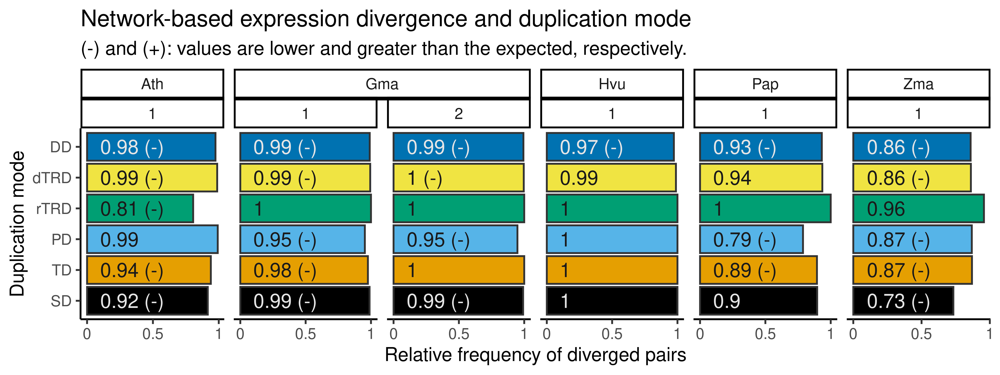
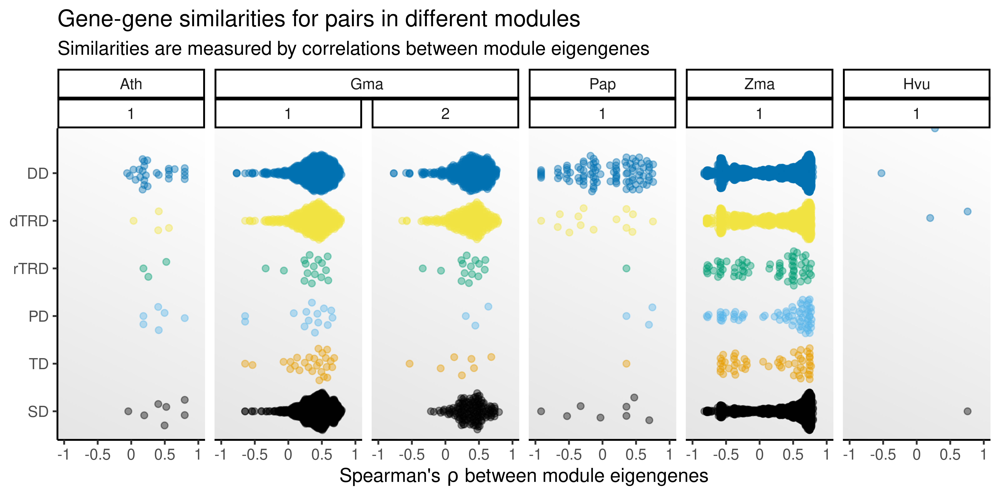
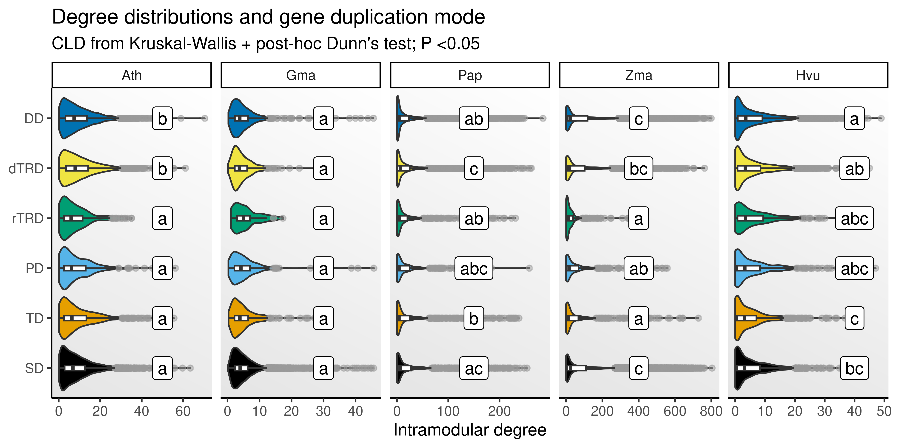
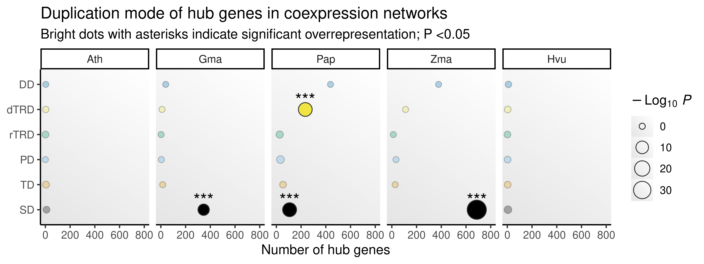

set.seed(123) # for reproducibility
# Load packages
library(here)
library(BioNERO)
library(SpatialExperiment)
library(SummarizedExperiment)
library(tidyverse)
library(patchwork)
library(exdiva)
# Load helper functions
source(here("code", "aggregate_spots.R"))
source(here("code", "utils.R"))
# Plot background
bg <- grid::linearGradient(colorRampPalette(c("gray90", "white"))(100))5 Network-based expression divergence
In this chapter, we will explore how duplicated genes diverge at the expression level using gene coexpression networks (GCNs).
We will start by loading the required packages.
Now, let’s load SpatialExperiment objects created in chapter 1.
# Load `SpatialExperiment` objects
ath_spe <- readRDS(here("products", "result_files", "spe", "spe_ath.rds"))
gma_spe <- readRDS(here("products", "result_files", "spe", "spe_gma.rds"))
pap_spe <- readRDS(here("products", "result_files", "spe", "spe_pap.rds"))
zma_spe <- readRDS(here("products", "result_files", "spe", "spe_zma.rds"))
hvu_spe <- readRDS(here("products", "result_files", "spe", "spe_hvu.rds"))
hvu_spe <- lapply(hvu_spe, function(x) return(x[, !is.na(x$tissue)]))And duplicate pairs for each species, classified by age groups, obtained in chapter 2.
# Read duplicated gene pairs for each species
dup_pairs <- readRDS(here("products", "result_files", "dup_list.rds"))
# Read duplicated gene pairs with age-based group classifications
pairs_age <- readRDS(here("products", "result_files", "pairs_by_age_group.rds"))5.1 Inferring gene coexpression networks (GCNs)
We will use BioNERO to infer signed hybrid GCNs using Spearman’s \(\rho\) as a correlation method. We will infer a single GCN for each species by pseudobulking and combining different slides. Let’s start with this aggregation step.
# Define helper function to pseudobulk and combine count data
pseudobulk_and_combine <- function(spe_list, domain = "cell_type") {
# Create a single matrix with pseudobulk counts for all samples
ccounts <- lapply(seq_along(spe_list), function(x) {
ag <- counts(scuttle::aggregateAcrossCells(
spe_list[[x]], ids = spe_list[[x]][[domain]], statistics = "sum"
))
colnames(ag) <- paste0(colnames(ag), "_S", x)
ag <- cbind(gene = rownames(ag), as.data.frame(ag))
return(ag)
})
ccounts <- Reduce(function(x, y) merge(x, y, by = "gene", all.x = TRUE), ccounts)
ccounts <- ccounts |>
tibble::column_to_rownames("gene") |>
as.matrix()
ccounts[is.na(ccounts)] <- 0
# Recreate SpatialExperiment object and get log-norm counts
spe <- SpatialExperiment::SpatialExperiment(
assays = list(counts = ccounts),
colData = data.frame(
row.names = colnames(ccounts),
domain = gsub("_S.*", "", colnames(ccounts)),
slide = gsub(".*_S", "S", colnames(ccounts))
)
)
spe <- scuttle::computeLibraryFactors(spe)
spe <- scuttle::logNormCounts(spe)
return(spe)
}
# Get combined pseudobulked counts for each species
spe_all <- list(
Ath = pseudobulk_and_combine(ath_spe, "cell_type"),
Gma = pseudobulk_and_combine(gma_spe, "annotation"),
Pap = pseudobulk_and_combine(pap_spe, "clusters"),
Zma = pseudobulk_and_combine(zma_spe, "cell_type"),
Hvu = pseudobulk_and_combine(hvu_spe, "tissue")
)Next, we will infer the gene coexpression networks.
WGCNA::allowWGCNAThreads(nThreads = 16)
# For each species, infer a GCN for each sample based on metaspot aggregation
gcns <- lapply(spe_all, function(sp) {
## Infer signed hybrid GCN based on Spearman's correlations
mat <- as.matrix(assay(sp, "logcounts"))
power <- SFT_fit(mat, net_type = "signed hybrid", cor_method = "spearman")
gcn <- exp2gcn(
mat, net_type = "signed hybrid", SFTpower = power$power,
cor_method = "spearman", return_cormat = FALSE, verbose = TRUE
)
## Extract hubs
hubs <- get_hubs_gcn(mat, gcn)
## Create a list with relevant elements
result_list <- list(
SFTplot = power$plot,
MEs = gcn$MEs,
genes_and_modules = gcn$genes_and_modules,
k = gcn$kIN,
hubs = hubs
)
return(result_list)
})5.2 Duplicate co-occurrence in coexpression modules
Now, for each species, we will count the frequencies of genes in each module preservation class identified by exdiva.
# Get module preservation classes with {exdiva}
sp <- names(gcns)
mod_comps <- lapply(sp, function(x) {
## Get duplicate pairs and ages for species `x`
dup_df <- pairs_age[[tolower(x)]]
## Get comparison classes
comps <- compare_coex_modules(dup_df, gcns[[x]]$genes_and_modules)
return(comps)
}) |>
purrr::set_names(sp) |>
bind_rows(.id = "species")Next, we will get the proportion of diverged gene pairs (i.e., ‘diverged’ and ‘only one’ category together), and compare the observed frequency to a null distribution of frequencies obtained from 10,000 degree-preserving simulated networks (through node label permutation).
# Get proportion of diverged pairs
prop_div <- mod_comps |>
filter(module_preservation != "both_absent") |>
mutate(species_peak = str_c(species, peak, sep = "_")) |>
mutate(
module_preservation = str_replace_all(
module_preservation, "one_absent", "diverged"
)
) |>
group_by(species_peak, type) |>
dplyr::count(module_preservation) |>
mutate(prop_div = n / sum(n)) |>
ungroup() |>
filter(module_preservation == "diverged")
# Get simulated proportions
sp <- names(gcns)
prop_sim <- lapply(sp, function(x) {
message("Working on ", x)
## Get duplicates and ages
dup_df <- pairs_age[[tolower(x)]]
## Perform node label permutation 10k times and get frequency of diverged pairs
sim_prop <- lapply(seq_len(1e4), function(z) {
### Simulate modules
sm <- gcns[[x]]$genes_and_modules
sm$Genes <- sample(sm$Genes, replace = FALSE)
### Get frequency of diverged pairs in simulated modules
sprop <- compare_coex_modules(dup_df, sm) |>
filter(module_preservation != "both_absent") |>
mutate(species = x) |>
mutate(species_peak = str_c(species, peak, sep = "_")) |>
mutate(
module_preservation = str_replace_all(
module_preservation, "one_absent", "diverged"
)
) |>
group_by(species_peak, type) |>
dplyr::count(module_preservation) |>
mutate(prop_div = n / sum(n)) |>
ungroup() |>
filter(module_preservation == "diverged") |>
mutate(sim = z)
### Combine results
res_list <- setNames(
sprop$prop_div,
paste0(sprop$species_peak, "_", sprop$type)
)
return(res_list)
}) |> unlist()
return(sim_prop)
})
names(prop_sim) <- sp
# Calculate P-values from null distros
dnames <- lapply(prop_sim, function(x) names(x) |> unique()) |> unlist()
observed <- prop_div |>
mutate(dnames = str_c(species_peak, type, sep = "_")) |>
dplyr::select(dnames, prop_div)
pvals <- lapply(dnames, function(x) {
## Get null distribution and observed value
nulls <- prop_sim |> purrr::pluck(gsub("_.*", "", x))
nulls <- nulls[names(nulls) == x]
obs <- observed |>
dplyr::filter(dnames == x) |>
dplyr::pull(prop_div)
# Compare observed to null and get a P-value
p_greater <- mean(nulls >= obs)
p_twosided <- mean(abs(nulls - mean(nulls)) >= abs(obs - mean(nulls)))
p_less <- mean(nulls <= obs)
final_stats <- data.frame(
group = x,
p_greater = p_greater,
p_less = p_less,
p_twosided = p_twosided
)
return(final_stats)
}) |>
bind_rows() |>
mutate(
signif = case_when(p_greater <0.05 | p_less <0.05 ~ "*", TRUE ~ "")
)
pvals$smallest <- names(pvals[, c(2,3)])[apply(pvals[, c(2,3)], 1, which.min)]
pvals <- pvals |>
mutate(
slabel = case_when(
signif == "*" & smallest == "p_less" ~ "-",
signif == "*" & smallest == "p_greater" ~ "+",
TRUE ~ ""
)
)Next, we will visualize frequencies of diverged duplicates by mode for each species.
# Plot frequency of diverged pairs
pdata <- prop_div |>
mutate(group = str_c(species_peak, type, sep = "_")) |>
separate_wider_delim(species_peak, delim = "_", names = c("species", "peak")) |>
mutate(
type = factor(type, levels = c("SD", "TD", "PD", "rTRD", "dTRD", "DD"))
) |>
left_join(pvals, by = "group") |>
dplyr::select(species, peak, type, prop_div, slabel) |>
mutate(
prop = signif(prop_div, 2),
lab = case_when(
slabel == "" ~ as.character(prop),
TRUE ~ paste0(prop, " (", slabel, ")")
)
) |>
dplyr::select(-prop)
p_diverged_gcn <- pdata |>
ggplot(aes(x = prop_div, y = type, fill = type)) +
geom_bar(stat = "identity", color = "gray20") +
ggh4x::facet_nested(~species + peak, scales = "free_x") +
geom_text(aes(x = 0.1, label = lab, color = type), hjust = 0, size = 4) +
scale_color_manual(values = c("gray90", rep("gray10", 4), "gray90")) +
scale_fill_manual(values = palette.colors()) +
theme_classic() +
labs(
title = "Network-based expression divergence and duplication mode",
subtitle = "(-): observed values are smaller than expected",
x = "Relative frequency of diverged pairs", y = "Duplication mode"
) +
scale_x_continuous(
breaks = seq(0, 1, by = 0.5), labels = c(0, 0.5, 1)
) +
theme(legend.position = "none")
p_diverged_gcn
The figure shows that, for paralog pairs for which both genes are expressed, most pairs diverge in expression, as they are either in different coexpression modules or only one gene is expressed. Importantly, despite the high proportions of diverged pairs, some proportions are still lower than the expected by chance in degree-preserving simulated networks, indicating a significantly higher proportion of preserved pairs. However, there is no consistent association between duplication modes and significantly higher proportion of preservation across species.
5.3 Distances between module eigengenes
Since the classification system in exdiva::compare_coex_modules() is binary (i.e., genes in a paralog pair eitheir co-occur or do not co-occur in the same module), we will also explore quantitatively how different genes in different modules are. For that, we for genes in different modules, we will calculate distances between module eigengenes.
# Calculate distances between module eigengenes
sp <- names(gcns)
me_dist <- lapply(sp, function(x) {
d <- compare_coex_me(
mod_comps |>
dplyr::relocate(species, .after = last_col()) |>
dplyr::filter(species == x),
gcns[[x]]$MEs
)
return(d)
}) |>
bind_rows() |>
mutate(
type = factor(type, levels = c("SD", "TD", "PD", "rTRD", "dTRD", "DD")),
species = factor(species, levels = c("Ath", "Gma", "Pap", "Zma", "Hvu"))
)
# Plot distances
p_medist <- ggplot(me_dist, aes(x = ME_cor, y = type)) +
ggbeeswarm::geom_quasirandom(aes(color = type), alpha = 0.4) +
scale_color_manual(values = palette.colors()) +
ggh4x::facet_nested(~species + peak) +
theme_classic() +
theme(
panel.background = element_rect(fill = bg),
legend.position = "none"
) +
scale_x_continuous(
limits = c(-1, 1),
breaks = seq(-1, 1, by = 0.5),
labels = c(-1, -0.5, 0, 0.5, 1)
) +
labs(
x = expression("Spearman's" ~ rho ~ "between module eigengenes"),
y = NULL,
title = "Gene-gene similarities for pairs in different modules",
subtitle = "Similarities are measured by correlations between module eigengenes"
)
p_medist
The plot shows that, of the paralog pairs for which genes are in different modules, such different modules are actually not so different, with mostly moderate correlations between module eigengenes. Besides, for some species and duplication types, there was no or very few pairs classified as ‘diverged’, but most of the diverged pairs were included in the ‘only one’ category (i.e., only one gene was in the network, also indicating divergence). For such category, the correlation between eigengenes would be non-existent, since one of the genes is not in any module.
5.4 Node degree and duplication mode
Here, we will test whether genes originating from different duplication modes have significantly different degrees.
# Get degree and duplication mode for each gene
sp <- names(gcns)
degree_dup <- lapply(sp, function(x) {
df <- gcns[[x]]$k |>
tibble::rownames_to_column("gene") |>
dplyr::select(gene, k = kWithin) |>
inner_join(dup_pairs[[tolower(x)]]$gene, by = "gene") |>
mutate(species = x)
return(df)
}) |>
bind_rows() |>
mutate(
type = factor(type, levels = c("SD", "TD", "PD", "rTRD", "dTRD", "DD")),
species = factor(species, levels = c("Ath", "Gma", "Pap", "Zma", "Hvu"))
)
# Test for significant differences
degree_clds <- lapply(
split(degree_dup, degree_dup$species),
cld_kw_dunn,
var = "type", value = "k"
) |>
bind_rows(.id = "species") |>
inner_join(
data.frame(
species = c("Ath", "Gma", "Pap", "Zma", "Hvu"),
x = c(50, 30, 150, 400, 40)
)
) |>
mutate(species = factor(species, levels = c("Ath", "Gma", "Pap", "Zma", "Hvu"))) |>
dplyr::rename(type = Group)
# Plot distributions
p_degree <- ggplot(degree_dup, aes(x = k, y = type)) +
geom_violin(aes(fill = type), show.legend = FALSE) +
geom_boxplot(width = 0.1, outlier.color = "gray60", outlier.alpha = 0.5) +
scale_fill_manual(values = palette.colors()) +
geom_label(
data = degree_clds,
aes(x = x, y = type, label = Letter)
) +
facet_wrap(~species, nrow = 1, scales = "free_x") +
labs(
title = "Degree distributions and gene duplication mode",
subtitle = "CLD from Kruskal-Wallis + post-hoc Dunn's test; P <0.05",
x = "Intramodular degree", y = NULL
) +
theme_classic() +
theme(panel.background = element_rect(fill = bg))
p_degree
The figure shows that genes originating from some duplication modes (e.g., DNA tranposons, tandem, and segmental) tend to have overall higher degree. However, there is no universal pattern across species. For instance, there are no differences in degree by duplication mode in soybean. Likewise, genes originating from tandem duplications have higher degree in orchid flowers and barley seeds, but not in other data sets.
Next, we will test if hubs are overrepresented in genes from any particular duplication mode.
# Test for associations between hubs and genes from particular dup modes
## Define helper function to perform ORA for duplication modes
ora_dupmode <- function(genes, dup_df) {
df <- HybridExpress::ora(
genes = genes,
annotation = as.data.frame(dup_df),
background = dup_df$gene,
min_setsize = 2,
max_setsize = 1e8,
alpha = 1 # to get all P-values (and plot)
)
return(df)
}
# Perform overrepresentation analysis for duplication modes
sp <- names(gcns)
hubs_dup <- lapply(sp, function(x) {
df <- ora_dupmode(
genes = gcns[[x]]$hubs$Gene,
dup_df = dup_pairs[[tolower(x)]]$genes
) |>
mutate(species = x)
return(df)
}) |>
bind_rows() |>
dplyr::select(species, type = term, genes, all, padj) |>
mutate(
type = factor(type, levels = c("SD", "TD", "PD", "rTRD", "dTRD", "DD")),
species = factor(species, levels = c("Ath", "Gma", "Pap", "Zma", "Hvu"))
)
# Plot results
p_ora_hubs_dup <- hubs_dup |>
mutate(
logP = -log10(padj),
significant = ifelse(padj < 0.05, TRUE, FALSE),
symbol = case_when(
padj <=0.05 & padj >0.01 ~ "*",
padj <=0.01 & padj >0.001 ~ "**",
padj <=0.001 ~ "***",
TRUE ~ ""
)
) |>
ggplot(aes(x = genes, y = type)) +
geom_point(
aes(fill = type, size = logP, alpha = significant),
color = "gray20", pch = 21
) +
scale_size(range = c(2, 7)) +
scale_alpha_manual(values = c(0.3, 1)) +
scale_fill_manual(values = palette.colors()) +
geom_text(aes(label = symbol), vjust = -0.3, size = 5) +
facet_wrap(~species, nrow = 1) +
scale_x_continuous(limits = c(0, 800)) +
theme_classic() +
theme(
panel.background = element_rect(fill = bg)
) +
guides(fill = "none", alpha = "none") +
labs(
title = "Duplication mode of hub genes in coexpression networks",
subtitle = "Bright dots with asterisks indicate significant overrepresentation; P <0.05",
x = "Number of hub genes", y = NULL,
size = expression(-Log[10] ~ italic(P))
)
p_ora_hubs_dup
The figure shows that hubs are enriched in genes originating from segmental duplications (in three out of five species) and transposed duplication (in one out of five species), suggesting that these duplication mechanisms tend to create genes with central roles.
Saving important objects
Lastly, we will save important objects and plots to be reused later.
# R objects
## GCNs from pseudobulk data - one per species
saveRDS(
gcns, compress = "xz",
file = here("products", "result_files", "gcns_pseudobulk.rds")
)
# Plots
## Network-based expression divergence and duplication mode (barplot)
saveRDS(
p_diverged_gcn, compress = "xz",
file = here("products", "plots", "network_based_divergence.rds")
)
## Distribution of similarities between eigengenes for diverged pairs
saveRDS(
p_medist, compress = "xz",
file = here("products", "plots", "ME_similarities_diverged_pairs.rds")
)
## Degree distribution and duplication mode
saveRDS(
p_degree, compress = "xz",
file = here("products", "plots", "degree_distro_by_duplication_mode.rds")
)
## GCN hubs and duplication mode
saveRDS(
p_ora_hubs_dup, compress = "xz",
file = here("products", "plots", "GCN_hubs_by_duplication_mode.rds")
)Session info
This document was created under the following conditions:
─ Session info ───────────────────────────────────────────────────────────────
setting value
version R version 4.4.1 (2024-06-14)
os Ubuntu 22.04.4 LTS
system x86_64, linux-gnu
ui X11
language (EN)
collate en_US.UTF-8
ctype en_US.UTF-8
tz Europe/Brussels
date 2025-04-23
pandoc 3.2 @ /usr/lib/rstudio/resources/app/bin/quarto/bin/tools/x86_64/ (via rmarkdown)
─ Packages ───────────────────────────────────────────────────────────────────
package * version date (UTC) lib source
abind 1.4-5 2016-07-21 [1] CRAN (R 4.4.1)
annotate 1.82.0 2024-04-30 [1] Bioconductor 3.19 (R 4.4.1)
AnnotationDbi 1.66.0 2024-05-01 [1] Bioconductor 3.19 (R 4.4.1)
backports 1.5.0 2024-05-23 [1] CRAN (R 4.4.1)
base64enc 0.1-3 2015-07-28 [1] CRAN (R 4.4.1)
beeswarm 0.4.0 2021-06-01 [1] CRAN (R 4.4.1)
Biobase * 2.64.0 2024-04-30 [1] Bioconductor 3.19 (R 4.4.1)
BiocGenerics * 0.50.0 2024-04-30 [1] Bioconductor 3.19 (R 4.4.1)
BiocManager 1.30.23 2024-05-04 [1] CRAN (R 4.4.1)
BiocParallel 1.38.0 2024-04-30 [1] Bioconductor 3.19 (R 4.4.1)
BiocStyle 2.32.1 2024-06-16 [1] Bioconductor 3.19 (R 4.4.1)
BioNERO * 1.12.0 2024-04-30 [1] Bioconductor 3.19 (R 4.4.1)
Biostrings 2.72.1 2024-06-02 [1] Bioconductor 3.19 (R 4.4.1)
bit 4.0.5 2022-11-15 [1] CRAN (R 4.4.1)
bit64 4.0.5 2020-08-30 [1] CRAN (R 4.4.1)
blob 1.2.4 2023-03-17 [1] CRAN (R 4.4.1)
broom 1.0.6 2024-05-17 [1] CRAN (R 4.4.1)
cachem 1.1.0 2024-05-16 [1] CRAN (R 4.4.1)
car 3.1-2 2023-03-30 [1] CRAN (R 4.4.1)
carData 3.0-5 2022-01-06 [1] CRAN (R 4.4.1)
checkmate 2.3.1 2023-12-04 [1] CRAN (R 4.4.1)
circlize 0.4.16 2024-02-20 [1] CRAN (R 4.4.1)
cli 3.6.3 2024-06-21 [1] CRAN (R 4.4.1)
clue 0.3-65 2023-09-23 [1] CRAN (R 4.4.1)
cluster 2.1.6 2023-12-01 [1] CRAN (R 4.4.1)
coda 0.19-4.1 2024-01-31 [1] CRAN (R 4.4.1)
codetools 0.2-20 2024-03-31 [1] CRAN (R 4.4.1)
colorspace 2.1-0 2023-01-23 [1] CRAN (R 4.4.1)
ComplexHeatmap 2.21.1 2024-09-24 [1] Github (jokergoo/ComplexHeatmap@0d273cd)
crayon 1.5.3 2024-06-20 [1] CRAN (R 4.4.1)
data.table 1.15.4 2024-03-30 [1] CRAN (R 4.4.1)
DBI 1.2.3 2024-06-02 [1] CRAN (R 4.4.1)
DelayedArray 0.30.1 2024-05-07 [1] Bioconductor 3.19 (R 4.4.1)
digest 0.6.36 2024-06-23 [1] CRAN (R 4.4.1)
doParallel 1.0.17 2022-02-07 [1] CRAN (R 4.4.1)
dplyr * 1.1.4 2023-11-17 [1] CRAN (R 4.4.1)
dynamicTreeCut 1.63-1 2016-03-11 [1] CRAN (R 4.4.1)
edgeR 4.2.1 2024-07-14 [1] Bioconductor 3.19 (R 4.4.1)
evaluate 0.24.0 2024-06-10 [1] CRAN (R 4.4.1)
exdiva * 0.99.0 2024-08-21 [1] Bioconductor
fansi 1.0.6 2023-12-08 [1] CRAN (R 4.4.1)
farver 2.1.2 2024-05-13 [1] CRAN (R 4.4.1)
fastcluster 1.2.6 2024-01-12 [1] CRAN (R 4.4.1)
fastmap 1.2.0 2024-05-15 [1] CRAN (R 4.4.1)
forcats * 1.0.0 2023-01-29 [1] CRAN (R 4.4.1)
foreach 1.5.2 2022-02-02 [1] CRAN (R 4.4.1)
foreign 0.8-87 2024-06-26 [1] CRAN (R 4.4.1)
Formula 1.2-5 2023-02-24 [1] CRAN (R 4.4.1)
genefilter 1.86.0 2024-04-30 [1] Bioconductor 3.19 (R 4.4.1)
generics 0.1.3 2022-07-05 [1] CRAN (R 4.4.1)
GENIE3 1.26.0 2024-04-30 [1] Bioconductor 3.19 (R 4.4.1)
GenomeInfoDb * 1.40.1 2024-05-24 [1] Bioconductor 3.19 (R 4.4.1)
GenomeInfoDbData 1.2.12 2024-07-24 [1] Bioconductor
GenomicRanges * 1.56.1 2024-06-12 [1] Bioconductor 3.19 (R 4.4.1)
GetoptLong 1.0.5 2020-12-15 [1] CRAN (R 4.4.1)
ggbeeswarm 0.7.2 2023-04-29 [1] CRAN (R 4.4.1)
ggdendro 0.2.0 2024-02-23 [1] CRAN (R 4.4.1)
ggh4x 0.2.8 2024-01-23 [1] CRAN (R 4.4.1)
ggnetwork 0.5.13 2024-02-14 [1] CRAN (R 4.4.1)
ggplot2 * 3.5.1 2024-04-23 [1] CRAN (R 4.4.1)
ggpubr 0.6.0 2023-02-10 [1] CRAN (R 4.4.1)
ggrepel 0.9.5 2024-01-10 [1] CRAN (R 4.4.1)
ggsignif 0.6.4.9000 2024-12-12 [1] Github (const-ae/ggsignif@705495f)
GlobalOptions 0.1.2 2020-06-10 [1] CRAN (R 4.4.1)
glue 1.7.0 2024-01-09 [1] CRAN (R 4.4.1)
GO.db 3.19.1 2024-07-24 [1] Bioconductor
gridExtra 2.3 2017-09-09 [1] CRAN (R 4.4.1)
gtable 0.3.5 2024-04-22 [1] CRAN (R 4.4.1)
here * 1.0.1 2020-12-13 [1] CRAN (R 4.4.1)
Hmisc 5.1-3 2024-05-28 [1] CRAN (R 4.4.1)
hms 1.1.3 2023-03-21 [1] CRAN (R 4.4.1)
htmlTable 2.4.3 2024-07-21 [1] CRAN (R 4.4.1)
htmltools 0.5.8.1 2024-04-04 [1] CRAN (R 4.4.1)
htmlwidgets 1.6.4 2023-12-06 [1] CRAN (R 4.4.1)
httr 1.4.7 2023-08-15 [1] CRAN (R 4.4.1)
igraph 2.0.3 2024-03-13 [1] CRAN (R 4.4.1)
impute 1.78.0 2024-04-30 [1] Bioconductor 3.19 (R 4.4.1)
intergraph 2.0-4 2024-02-01 [1] CRAN (R 4.4.1)
IRanges * 2.38.1 2024-07-03 [1] Bioconductor 3.19 (R 4.4.1)
iterators 1.0.14 2022-02-05 [1] CRAN (R 4.4.1)
jsonlite 1.8.8 2023-12-04 [1] CRAN (R 4.4.1)
KEGGREST 1.44.1 2024-06-19 [1] Bioconductor 3.19 (R 4.4.1)
knitr 1.48 2024-07-07 [1] CRAN (R 4.4.1)
labeling 0.4.3 2023-08-29 [1] CRAN (R 4.4.1)
lattice 0.22-6 2024-03-20 [1] CRAN (R 4.4.1)
lifecycle 1.0.4 2023-11-07 [1] CRAN (R 4.4.1)
limma 3.60.4 2024-07-17 [1] Bioconductor 3.19 (R 4.4.1)
locfit 1.5-9.10 2024-06-24 [1] CRAN (R 4.4.1)
lubridate * 1.9.3 2023-09-27 [1] CRAN (R 4.4.1)
magick 2.8.4 2024-07-14 [1] CRAN (R 4.4.1)
magrittr 2.0.3 2022-03-30 [1] CRAN (R 4.4.1)
MASS 7.3-61 2024-06-13 [1] CRAN (R 4.4.1)
Matrix 1.7-0 2024-04-26 [1] CRAN (R 4.4.1)
MatrixGenerics * 1.16.0 2024-04-30 [1] Bioconductor 3.19 (R 4.4.1)
matrixStats * 1.3.0 2024-04-11 [1] CRAN (R 4.4.1)
memoise 2.0.1 2021-11-26 [1] CRAN (R 4.4.1)
mgcv 1.9-1 2023-12-21 [1] CRAN (R 4.4.1)
minet 3.62.0 2024-04-30 [1] Bioconductor 3.19 (R 4.4.1)
munsell 0.5.1 2024-04-01 [1] CRAN (R 4.4.1)
NetRep 1.2.7 2023-08-19 [1] CRAN (R 4.4.1)
network 1.18.2 2023-12-05 [1] CRAN (R 4.4.1)
nlme 3.1-165 2024-06-06 [1] CRAN (R 4.4.1)
nnet 7.3-19 2023-05-03 [1] CRAN (R 4.4.1)
patchwork * 1.2.0 2024-01-08 [1] CRAN (R 4.4.1)
pillar 1.9.0 2023-03-22 [1] CRAN (R 4.4.1)
pkgconfig 2.0.3 2019-09-22 [1] CRAN (R 4.4.1)
plyr 1.8.9 2023-10-02 [1] CRAN (R 4.4.1)
png 0.1-8 2022-11-29 [1] CRAN (R 4.4.1)
preprocessCore 1.66.0 2024-04-30 [1] Bioconductor 3.19 (R 4.4.1)
purrr * 1.0.2 2023-08-10 [1] CRAN (R 4.4.1)
R6 2.5.1 2021-08-19 [1] CRAN (R 4.4.1)
RColorBrewer 1.1-3 2022-04-03 [1] CRAN (R 4.4.1)
Rcpp 1.0.13 2024-07-17 [1] CRAN (R 4.4.1)
readr * 2.1.5 2024-01-10 [1] CRAN (R 4.4.1)
reshape2 1.4.4 2020-04-09 [1] CRAN (R 4.4.1)
RhpcBLASctl 0.23-42 2023-02-11 [1] CRAN (R 4.4.1)
rjson 0.2.21 2022-01-09 [1] CRAN (R 4.4.1)
rlang 1.1.4 2024-06-04 [1] CRAN (R 4.4.1)
rmarkdown 2.27 2024-05-17 [1] CRAN (R 4.4.1)
rpart 4.1.23 2023-12-05 [1] CRAN (R 4.4.1)
rprojroot 2.0.4 2023-11-05 [1] CRAN (R 4.4.1)
RSQLite 2.3.7 2024-05-27 [1] CRAN (R 4.4.1)
rstatix 0.7.2 2023-02-01 [1] CRAN (R 4.4.1)
rstudioapi 0.16.0 2024-03-24 [1] CRAN (R 4.4.1)
S4Arrays 1.4.1 2024-05-20 [1] Bioconductor 3.19 (R 4.4.1)
S4Vectors * 0.42.1 2024-07-03 [1] Bioconductor 3.19 (R 4.4.1)
scales 1.3.0 2023-11-28 [1] CRAN (R 4.4.1)
sessioninfo 1.2.2 2021-12-06 [1] CRAN (R 4.4.1)
shape 1.4.6.1 2024-02-23 [1] CRAN (R 4.4.1)
SingleCellExperiment * 1.26.0 2024-04-30 [1] Bioconductor 3.19 (R 4.4.1)
SparseArray 1.4.8 2024-05-24 [1] Bioconductor 3.19 (R 4.4.1)
SpatialExperiment * 1.14.0 2024-05-01 [1] Bioconductor 3.19 (R 4.4.1)
statmod 1.5.0 2023-01-06 [1] CRAN (R 4.4.1)
statnet.common 4.9.0 2023-05-24 [1] CRAN (R 4.4.1)
stringi 1.8.4 2024-05-06 [1] CRAN (R 4.4.1)
stringr * 1.5.1 2023-11-14 [1] CRAN (R 4.4.1)
SummarizedExperiment * 1.34.0 2024-05-01 [1] Bioconductor 3.19 (R 4.4.1)
survival 3.7-0 2024-06-05 [1] CRAN (R 4.4.1)
sva 3.52.0 2024-05-01 [1] Bioconductor 3.19 (R 4.4.1)
tibble * 3.2.1 2023-03-20 [1] CRAN (R 4.4.1)
tidyr * 1.3.1 2024-01-24 [1] CRAN (R 4.4.1)
tidyselect 1.2.1 2024-03-11 [1] CRAN (R 4.4.1)
tidyverse * 2.0.0 2023-02-22 [1] CRAN (R 4.4.1)
timechange 0.3.0 2024-01-18 [1] CRAN (R 4.4.1)
tzdb 0.4.0 2023-05-12 [1] CRAN (R 4.4.1)
UCSC.utils 1.0.0 2024-04-30 [1] Bioconductor 3.19 (R 4.4.1)
utf8 1.2.4 2023-10-22 [1] CRAN (R 4.4.1)
vctrs 0.6.5 2023-12-01 [1] CRAN (R 4.4.1)
vipor 0.4.7 2023-12-18 [1] CRAN (R 4.4.1)
WGCNA 1.72-5 2023-12-07 [1] CRAN (R 4.4.1)
withr 3.0.0 2024-01-16 [1] CRAN (R 4.4.1)
xfun 0.51 2025-02-19 [1] CRAN (R 4.4.1)
XML 3.99-0.17 2024-06-25 [1] CRAN (R 4.4.1)
xtable 1.8-4 2019-04-21 [1] CRAN (R 4.4.1)
XVector 0.44.0 2024-04-30 [1] Bioconductor 3.19 (R 4.4.1)
yaml 2.3.9 2024-07-05 [1] CRAN (R 4.4.1)
zlibbioc 1.50.0 2024-04-30 [1] Bioconductor 3.19 (R 4.4.1)
[1] /home/faalm/R/x86_64-pc-linux-gnu-library/4.4
[2] /usr/local/lib/R/site-library
[3] /usr/lib/R/site-library
[4] /usr/lib/R/library
──────────────────────────────────────────────────────────────────────────────